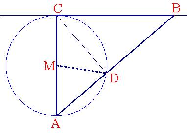

Problema
61.-
Sea
ACB un triángulo rectángulo en C con el cateto b constante.
Sea
M el punto medio de AC, y D el pie de la altura del vértice C sobre la
hipotenusa.
Demostrar
que al variar el vértice B, DM permanece constante.
Solución de F. Damián Aranda Ballesteros
profesor de Matemáticas del IES Blas Infante en Córdoba
Sol:

El punto D, pie de la altura del vértice C sobre la hipotenusa, pertenece al arco capaz de 90º construido sobre el segmento AC y, por tanto, el segmento MD no es otra cosa que el radio de dicha circunferencia.Por
tanto MD = AC/2 = b/2 =cte.